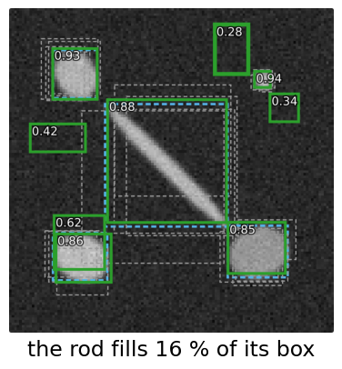
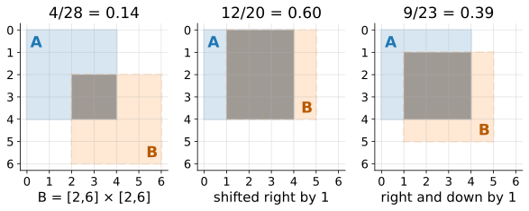
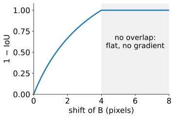
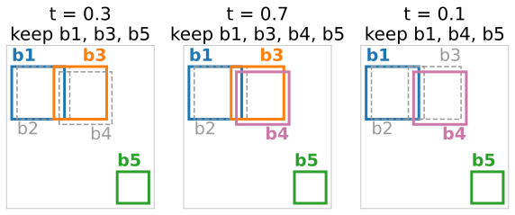
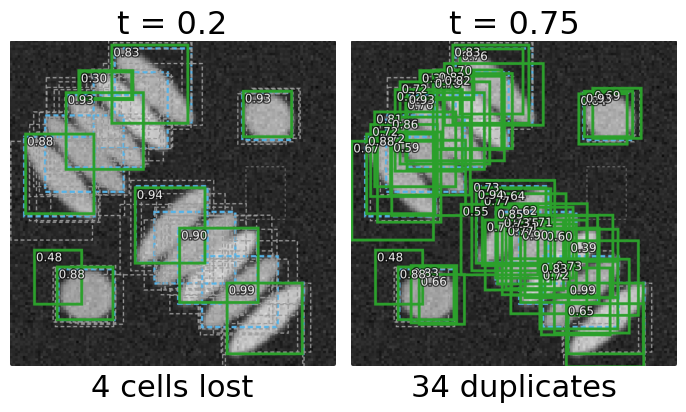

Finding objects as boxes
About this lecture
How does a network output “there are 12 cells, here”, when the number is not known in advance?
- Boxes: the simplest object description; IoU of two boxes in closed form.
- Where candidate boxes come from: a grid of guesses (in detail on the next day).
- Every object gets many candidates: non-maximum suppression (NMS) keeps one, and what it gets wrong in a crowd.
- How detections are scored: recalled from the evaluation day.
Slides titled The math give the formulas and proofs; the ideas are complete without them.
Boxes
A box = centre, width, height (4 numbers), plus a class and a score (how sure the detector is).
- Enough for counting, tracking, cropping each object for a second network.
- Poor for long diagonal objects: a box around a diagonal rod is mostly background (in the demo’s rod: the rod fills 16 % of its box).
- A mask per object can be predicted inside each box afterwards.

IoU of two boxes
The evaluation day’s overlap measure, intersection over union: \mathrm{IoU} = |A \cap B| / |A \cup B|. For two axis-aligned boxes the intersection is a box again.
- A = [0, 4] \times [0, 4], B = [2, 6] \times [2, 6]: intersection [2, 4] \times [2, 4], area 4; union 16 + 16 - 4 = 28; \mathrm{IoU} = 4/28 = 0.14.
- The same 4 \times 4 box shifted by one pixel to the right: 12/20 = 0.6. Shifted by one pixel right and down: 9/23 = 0.39.
- For small objects one pixel matters a lot.

The math: IoU of boxes in closed form
A = [a_0, a_1] \times [b_0, b_1], B = [c_0, c_1] \times [d_0, d_1]:
w = \max(0, \min(a_1, c_1) - \max(a_0, c_0)), \quad h = \max(0, \min(b_1, d_1) - \max(b_0, d_0)),
\mathrm{IoU}(A, B) = \frac{wh}{|A| + |B| - wh}.
- Scale invariant: scaling both boxes by s multiplies every area by s^2; the ratio is unchanged.
- 1 - \mathrm{IoU} as a training loss gives no gradient when the boxes do not overlap (w = 0 or h = 0 on a whole region): the loss is flat at 1 however far apart they are. Hence the regression losses on the box coordinates (next day).

Recall: scoring detections
From the evaluation day, unchanged:
- Match predictions to true objects one to one at IoU \ge \tau (often \tau = 0.5): TP, FP, FN objects; F1 and matching accuracy TP/(TP + FP + FN).
- Rank the scored detections, walk down the list: a precision–recall curve; its area is the average precision (AP). Detection benchmarks often average AP over \tau = 0.5, 0.55, \dots, 0.95.
This unit is about what happens before the evaluation: where the scored boxes come from, and how duplicates are removed.
Where do the candidates come from?
- The network looks at a coarse grid over the image (e.g. every 16 pixels).
- Every grid cell guesses a box and a score.
- Older detectors guess relative to template boxes (anchors); objects that fit no template are never learned.
- Others predict a heat map of centres; its peaks are the objects.
In detail, with a real network: Networks for cells and objects: single-shot detection.

Many candidates per object
Whatever proposes the boxes, every object gets several overlapping candidates: neighbouring grid cells, neighbouring pixels of a peak, jittered guesses.
Greedy non-maximum suppression: sort by score; keep the best box; delete every remaining box with IoU > t with it; repeat with the best remaining box.
Five boxes: b_1 = [0,10]^2 (0.9), b_2 = [1,11] \times [0,10] (0.8), b_3 = [8,18] \times [0,10] (0.7), b_4 = [9,19] \times [1,11] (0.6), b_5 = [20,26]^2 (0.3). Two true cells: under b_1 and under b_3.
| t | kept | |
|---|---|---|
| 0.3 | b_1, b_3, b_5 | duplicates gone |
| 0.7 | b_1, b_3, b_4, b_5 | b_4 (IoU 0.68 with b_3) survives |
| 0.1 | b_1, b_4, b_5 | b_3 (IoU 0.11 with b_1) deleted |

The math: greedy NMS
- Sort the candidates by score, highest first; K = \emptyset.
- Take the first remaining candidate b; add it to K.
- Remove every remaining candidate c with \mathrm{IoU}(b, c) > t.
- Repeat from 2 until no candidate remains; output K.
At most n rounds, each comparing with up to n boxes: O(n^2) IoUs. The result depends only on the order of the scores and on t. It is not an optimisation of any global criterion; it is a rule. The same rule with polygon IoU prunes star-convex polygons (next day, StarDist).
Try it: boxes and suppression
What NMS gets wrong
- In a crowd of touching cells, the box of a true neighbour overlaps the kept box by more than t: it is deleted (a missed cell). The fix “raise t” lets duplicates of the same cell survive.
- One threshold cannot do both when neighbours overlap as much as duplicates do. In the demo’s palisade (neighbour IoU about 0.3): t = 0.2 loses 4 of 12 cells; t = 0.75 keeps 34 duplicates; the best, t = 0.4, still has 3 false positives.
- Hence for dense cells the map-based routes of the previous unit are usually preferred over boxes.

Meanings of “non-maximum suppression”
| Where | What is suppressed | Neighbourhood |
|---|---|---|
| Canny (the edges day) | gradient values that are not the largest across the edge | the two neighbours along the gradient direction |
| Hough accumulator (the Hough day) | accumulator cells that are not a local peak | a window in parameter space |
| Detection (here) | boxes that overlap a better box by more than t | IoU with the kept boxes |
| Polygons (next day, StarDist) | polygons that overlap a better polygon by more than t | polygon IoU with the kept polygons |
A centre heat map’s peak picking (next day) is the Hough version; box NMS is a different rule with the same name, and polygon NMS is the box rule with polygon IoU.
Summary
- A box is 4 numbers + score; IoU of boxes has a closed form; poor for diagonal or long objects.
- Candidates come from a grid of guesses (anchors or centre peaks: next day).
- Every object gets many candidates; greedy NMS keeps the best and deletes overlaps above t.
- In crowds, one t cannot both remove duplicates and keep touching neighbours.
- Scoring (matching, F1, AP) comes from the evaluation day.